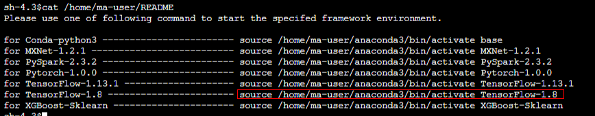

Multiple environments have been integrated into ModelArts Notebook. These environments contain Jupyter Notebook and Python packages, including TensorFlow, MXNet, Caffe, PyTorch, and Spark. You can use pip install to install external libraries in Jupyter Notebook or on the Terminal page.
Installing External Libraries in Jupyter Notebook
For example, use Jupyter Notebook to install Shapely in the TensorFlow-1.8 environment.
Installing External Libraries on the Terminal Page
For example, use pip to install Shapely in the TensorFlow-1.8 environment on the Terminal page.
- Open a notebook instance.
- On the Jupyter Notebook dashboard, choose New > Terminal.
- Enter the following command in the code input bar to obtain the command for activating TensorFlow-1.8 and activate it:
cat /home/ma-user/README
source /home/ma-user/anaconda3/bin/activate TensorFlow-1.8

If you use another engine, replace TensorFlow-1.8 in the command with the name and version of the engine.
Figure 1 Activating the environment
 - Type the following command in the code input bar to install Shapely:
A new independent running environment is opened when a ModelArts training job is created. The new environment is not associated with the packages installed in the notebook environment. Therefore, add os.system('pip install xxx') to the boot code before importing the installation package.
For example, if you need to use the Shapely dependency package in the training job, add the following code to the boot code after the notebook instance is installed:
import os
os.system('pip install Shapely')
import Shapely